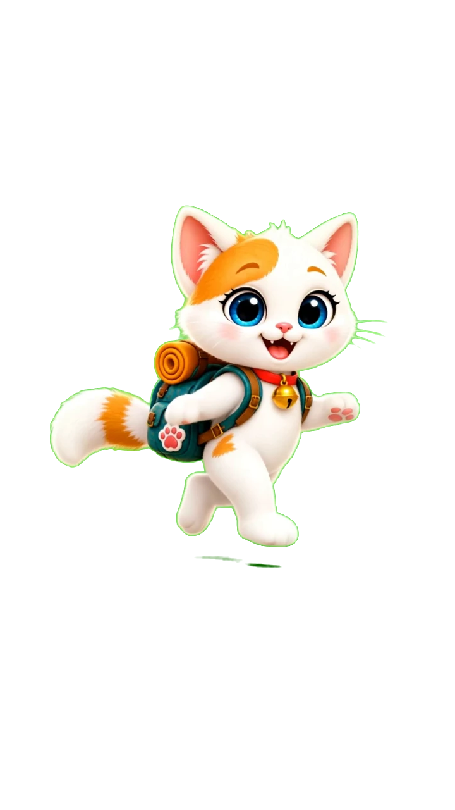

Хто сховався? 🌿
У саду хтось сховався! Торкайся схованок і шукай друзів разом із Мімі.

Готові до хованок?
Голос Мімі — Gigi.
У саду хтось сховався! Торкайся схованок і шукай друзів разом із Мімі.

Готові до хованок?
Голос Мімі — Gigi.